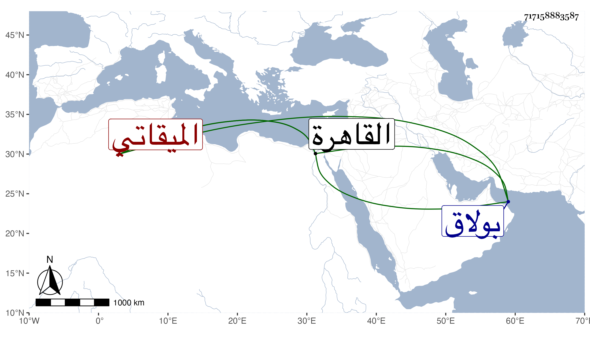

0902Sakhawi.DawLamic.ITO20230111-ara1.EIS1600.717158883587
Biography ID: 717158883587
67
أحمد بن علي بن عبد القادر بن محمد الشهاب ابن الشيخ نور الدين بن النقاش الميقاتي الآتي أبوه . ولد سنة سبع وعشرين وثمانمائة بالقاهرة . فاضل متميز في الميقات متقن للحسابيات والوضعيات خبير بالمباشرة في الرياسة خلف والده في مباشراته وقطن البارزية في بولاق لسد مباشرتها واستنابه في جهاته بالقاهرة . وكان منجمعا عن الناس مع مشاركة في النحو والصرف وغيرهما ونظم حسن وعشرة لطيفة واستحضار لنكت وظرائف وأظنه لم يتزوج . ومن نظمه فيمن اسمه يونس :
| قم فاقطف الوردة من خده | ولا تخف في ذاك من يحرس |
| وآنس النفس بذكر الذي | لساقه فهو لها يونس |
| عذاره والقد مع طرفه | ما الآس ما البان ما النرجس |
| وذكره العذب إذا ما نبا | حلت مخافات العدى يونس |
وقوله :
| كل من طبعه الأذية | ما يموت إلا مقهر |
| شامت فيه الأعادي | وعلى نفسه يحسر |
| لا تكن يا صاح تغتاب | لا ولا صاحب نميمه |
| واترك المزح ودعه | مع الألفاظ الذميمة |
| والزم التقوى ففيها | ساعة منها غنيمه |
| لا ترم قط سواها | تندم الآن وتخسر |
| وتصير بين الخلائق | أخمل الناس وتقهر |
وقوله :
| من ذا الذي يمنع ما قدره | من أمره وهو الذي صوره |
| لو كان للناس من نفسه | موعظة أو كان ذا تبصره |
| رأى بعين الحال في حاله | وحال عما حاله انكره |
| فكيف والآية فيه أتت | أي قتل الإنسان ما أكفره |
| يا أيها الإنسان ما غرك | بربك المنعم إلا الشره |
| فاقلع عن الذنب وتب واستقم | واخضع له إن ترتجي الآخره |
| وقل إلهي سيدي مقصدي | سؤلي مناي العفو والمغفره |
مات تقريبا سنة سبع وتسعين .
